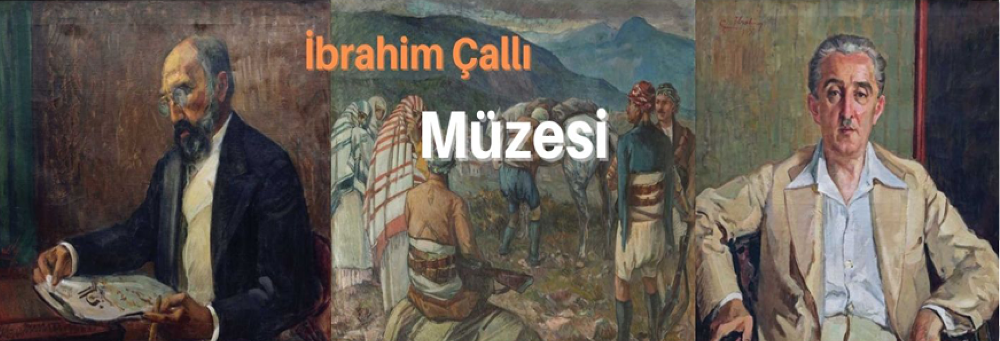

EN
Ara
Anasayfa
Etkinlikler
Hakkımızda
Tümü
Bu Siteleri Ziyaret Edebilirsin

Anasayfa
Etkinlikler
Hakkımızda
Tümü
İbrahim Çallı Kimdir
İbrahim Çallı (13 Temmuz 1882, Çal - 22 Mayıs 1960 , İstanbul), Türk Ressam. Rüştiyeyi doğum yeri olan Çal'da, Mülki İdadisini ise İzmir'de bitirdikten sonra, ailesi tarafından askeri okula girmek üzere İstanbul'a gönderildi. Ancak; o, çocukluğunun tutkusu olan resim çalışmalarına yönelerek, o dönemde konaklamak için kaldığı handa konaklayan ve resim dersi alan Vefa İdadisi öğrencilerinin arasına katılarak resim dersleri almaya başladı. Parasını çaldırıp maddi sıkıntı içine girince arzuhalcilik ve daha sonra adliyede kâtiplik gibi farklı işlerde çalıştı. Ermeni asıllı bir ressamla tanıştı ve ondan resim dersleri aldı. Ressam Roben Efendi’den de resim dersleri alan Çallı, Şeker Ahmet Paşa’nın oğlu İzzet Bey’le tanıştı. İzzet Bey’in aracılığı ile Şeker Ahmet Paşa'nın önerisi üzerine 1906 yılında şimdiki adı Mimar Sinan Güzel Sanatlar Üniversitesi olan dönemin Sanayi-i Nefise Mektebi'ne girdi. Altı yıllık okulu üç yılda bitirdi. “Zeybekler”e düzeltmeYeniden sergilemeye açılan Ankara Devlet Resim ve Heykel Müzesi İbrahim Çallı Salonu’nda 1914 kuşağı sanatçılarının resimleri yer alıyor. İbrahim Çallı’nın Zeybekler tablosu'nun özel bir öyküsü bulunmaktadır. Aynı zamanda Osman Hamdi’nin asistanı da olan Çallı, Atatürk’ün isteği üzerine Etnoğrafya Müzesi’nde bir sergi açar. Bu sergide de yer alan “Zeybekler” tablosunu gören Atatürk, Çallı’ya döner ve “Biz Kurtuluş Savaşı’nda yemeye ekmek bulamıyorduk, senin resmindeki atlar nasıl semirmiş böyle?” diye sorar. Usta ressam malzemelerini alır ve tablosundak i atı bir deri bir kemik hale getirir Çalışma üslubuİbrahim Çallı renk kullanımı konusundaki görüşlerini, görev yaptığı akademinin resim bölümü başkanlığını yürüten Leopold Levy ile girdiği tartışma sırasında şöyle ifade etmişti: "Talebeye yapılan telkin ve müdahalelerin neticesi, tabiat onlara ayni atmosfer ve ayni renkte gösteriliyor. Halbuki bizim memleketimiz, güneş, ziya ve renk memleketidir. Garbın koyu kurşuni semasıyla hiç alakası yoktur. Beşeriyet, resim sanatı üzerinde, renk vadisinde o kadar ısrar ile çalışmış, her büyük sanatkar palete bir iki yeni renk daha ilave etmiştir. Bizim mütehassısa (akademide bu unvanla görevlendirilen Levy'yi kastediyor) gelince, palette rengi asgariye indirmek taraftarıdır. Tabiatın öyle nüansları vardır ki, onlara mahsus renkleri kullanmak şarttır. Eğer Türk milleti Çallı'yı seviyorsa, güzel memleketini kendi renkleriyle ifade ettiği içindir."
İÇM'den Haberdar Olun
Yeni sergiler, etkinlikler ve içeriklerden haberdar ol.
E-Posta